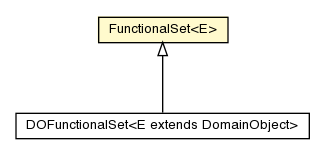

dml.runtime
Class FunctionalSet<E>

java.lang.Object
 dml.runtime.FunctionalSet<E>
dml.runtime.FunctionalSet<E>
- Direct Known Subclasses:
- DOFunctionalSet
public class FunctionalSet<E>
- extends Object
|
Constructor Summary |
protected |
FunctionalSet(int size,
jvstm.util.Cons<E> elems)
|
| Methods inherited from class java.lang.Object |
clone, equals, finalize, getClass, hashCode, notify, notifyAll, toString, wait, wait, wait |
EMPTY
public static final FunctionalSet EMPTY
size
protected final int size
elems
protected final jvstm.util.Cons<E> elems
FunctionalSet
protected FunctionalSet(int size,
jvstm.util.Cons<E> elems)
size
public int size()
get
public E get(int index)
addUnique
public FunctionalSet<E> addUnique(E obj)
add
public FunctionalSet<E> add(E obj)
remove
public FunctionalSet<E> remove(Object obj)
contains
public boolean contains(Object obj)
iterator
public Iterator<E> iterator()
makeFunctionalSet
protected FunctionalSet<E> makeFunctionalSet(int size,
jvstm.util.Cons<E> elems)
Copyright © 2013. All Rights Reserved.